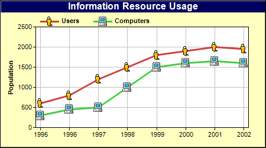

This example demonstrates loading external image files as data symbols by using DataSet.setDataSymbol2.
ChartDirector 7.1 (C++ Edition)
Custom Symbols

Source Code Listing
#include "chartdir.h"
int main(int argc, char *argv[])
{
// The data for the chart
double data0[] = {600, 800, 1200, 1500, 1800, 1900, 2000, 1950};
const int data0_size = (int)(sizeof(data0)/sizeof(*data0));
double data1[] = {300, 450, 500, 1000, 1500, 1600, 1650, 1600};
const int data1_size = (int)(sizeof(data1)/sizeof(*data1));
// The labels for the chart
const char* labels[] = {"1995", "1996", "1997", "1998", "1999", "2000", "2001", "2002"};
const int labels_size = (int)(sizeof(labels)/sizeof(*labels));
// Create a XYChart object of size 450 x 250 pixels, with a pale yellow (0xffffc0) background, a
// black border, and 1 pixel 3D border effect.
XYChart* c = new XYChart(450, 250, 0xffffc0, 0, 1);
// Set the plotarea at (60, 45) and of size 360 x 170 pixels, using white (0xffffff) as the plot
// area background color. Turn on both horizontal and vertical grid lines with light grey color
// (0xc0c0c0)
c->setPlotArea(60, 45, 360, 170, 0xffffff, -1, -1, 0xc0c0c0, -1);
// Add a legend box at (60, 20) (top of the chart) with horizontal layout. Use 8pt Arial Bold
// font. Set the background and border color to Transparent.
c->addLegend(60, 20, false, "Arial Bold", 8)->setBackground(Chart::Transparent);
// Add a title to the chart using 12pt Arial Bold/white font with a dark blue (000060)
// background.
c->addTitle("Information Resource Usage", "Arial Bold", 12, 0xffffff)->setBackground(0x000060);
// Set the labels on the x axis
c->xAxis()->setLabels(StringArray(labels, labels_size));
// Reserve 8 pixels margins at both side of the x axis to avoid the first and last symbols
// drawing outside of the plot area
c->xAxis()->setMargin(8, 8);
// Add a title to the y axis
c->yAxis()->setTitle("Population");
// Add a line layer to the chart
LineLayer* layer = c->addLineLayer();
// Add the first line using small_user.png as the symbol.
layer->addDataSet(DoubleArray(data0, data0_size), 0xcf4040, "Users")->setDataSymbol(
"small_user.png");
// Add the first line using small_computer.png as the symbol.
layer->addDataSet(DoubleArray(data1, data1_size), 0x40cf40, "Computers")->setDataSymbol(
"small_computer.png");
// Set the line width to 3 pixels
layer->setLineWidth(3);
// Output the chart
c->makeChart("customsymbolline.png");
//free up resources
delete c;
return 0;
}